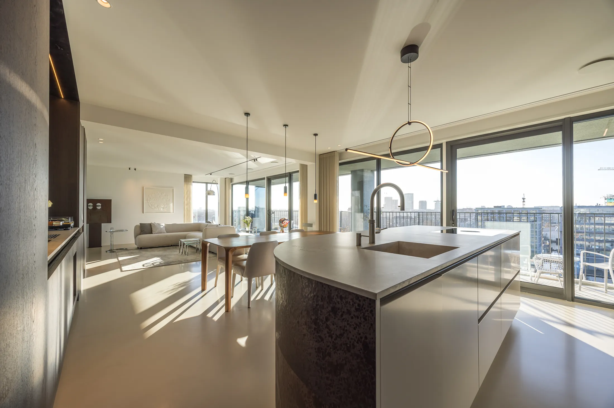

Blog · Subsidies
Subsidies voor je woning in 2026: ISDE, SVVE en gemeentelijke regelingen

Verduurzamen kost geld, maar je hoeft het lang niet allemaal zelf te betalen. In 2026 zijn er meerdere subsidies en leningen die je als woningeigenaar kunt combineren, van isolatie tot een warmtepomp. Het lastige is vooral het overzicht: landelijk, gemeentelijk en via het Warmtefonds loopt het door elkaar heen.
We zetten de belangrijkste regelingen voor 2026 op een rij, leggen uit wat je ongeveer terugkrijgt en hoe je ze slim stapelt. De bedragen zijn indicatief, want voorwaarden en budgetten veranderen per jaar.
ISDE: de belangrijkste landelijke subsidie
De Investeringssubsidie Duurzame Energie (ISDE) is voor de meeste woningeigenaren het startpunt. Je krijgt een vast bedrag per maatregel: voor een warmtepomp, een zonneboiler en voor isolatie. De hoogte hangt af van het type maatregel en, bij isolatie, van het aantal vierkante meters.
- Warmtepomp: indicatief €2.250 tot €5.000, afhankelijk van type en vermogen.
- Zonneboiler: €600 tot €2.500.
- Isolatie: een vast bedrag per m² voor vloer, spouwmuur, dak of glas.
Stapelvoordeel
Voer je twee of meer isolatiemaatregelen kort na elkaar uit, dan verdubbelt het subsidiebedrag per maatregel vaak. Het loont dus om isolatie te bundelen in plaats van jaar na jaar los aan te pakken.
SVVE: voor VvE's en grotere ingrepen
De Subsidie verduurzaming en onderhoud voor VvE's (SVVE) is bedoeld voor appartementeigenaren die via hun Vereniging van Eigenaren verduurzamen. Naast isolatie en installaties vergoedt de SVVE ook energieadvies, een meerjarenonderhoudsplan en procesbegeleiding. Woon je in een appartement, dan loopt jouw subsidie vaak via deze regeling in plaats van via de ISDE.
Gemeentelijke en provinciale regelingen
Bovenop de landelijke regelingen heeft bijna elke gemeente een eigen potje, bijvoorbeeld voor een energieonderzoek, een groen dak of het afkoppelen van regenwater. Die bedragen zijn kleiner, maar je kunt ze vaak stapelen op de ISDE.
Het aanbod verschilt sterk per regio. In gemeenten als Utrecht, Amsterdam en Eindhoven zijn de regelingen doorgaans ruimer dan in kleinere gemeenten. Check altijd de actuele regeling op de site van je eigen gemeente, want de potjes zijn vaak op als het budget op is.
Lenen met voordeel: het Warmtefonds
Kun of wil je niet alles ineens betalen? Via het Nationaal Warmtefonds leen je tegen een lage rente voor energiebesparende maatregelen, de Energiebespaarlening. Voor huishoudens met een lager inkomen geldt soms zelfs 0% rente. Dit is geen subsidie, maar het maakt een grote verduurzaming wel een stuk haalbaarder.
Hoe vraag je het slim aan?
De volgorde luistert nauw. Voor de ISDE geldt dat je de subsidie pas ná installatie aanvraagt, met de factuur en het bewijs van de erkende installateur. Vraag je te vroeg of te laat aan, dan loop je het mis.
- Bepaal eerst welke maatregelen je woning nodig heeft, het liefst op basis van een energieadvies.
- Check welke landelijke, gemeentelijke en provinciale regelingen je kunt combineren.
- Laat het werk uitvoeren door een erkende vakman en bewaar alle facturen en bewijzen.
- Dien de aanvraag in binnen de termijn die per regeling geldt, meestal binnen 12 of 24 maanden na uitvoering.
Wij regelen het mee
Bij energetische verbouwingen verzorgen wij het subsidietraject standaard mee: we adviseren over de maatregelen, leveren de juiste bewijsstukken en helpen met de aanvraag. Zo weet je zeker dat je niets misloopt.
Reken het door vóór je begint
Subsidies bepalen mede wat een verstandige investering is. Een maatregel die zonder subsidie pas in twintig jaar rendeert, kan met subsidie en het lage 9% BTW-tarief op arbeid binnen tien jaar uit. Bekijk daarom altijd het netto plaatje, niet alleen de bruto investering.
Op onze prijspagina reken je de bandbreedtes door, van losse maatregelen tot een complete energetische renovatie. En in ons artikel over energiezuinig verbouwen lees je welke maatregelen zich het snelst terugverdienen.
Conclusie
Voor woningeigenaren is er in 2026 meer mogelijk dan veel mensen denken: ISDE voor de meeste maatregelen, SVVE voor appartementen, lokale potjes erbovenop en een gunstige lening via het Warmtefonds. Het grootste risico is niet dat je te weinig krijgt, maar dat je een regeling mist door de verkeerde volgorde.
Wil je weten welke subsidies voor jouw woning en plan gelden? Vraag een vrijblijvende opname aan, dan rekenen we het samen met je door.
Vraag een vrijblijvende opname aan